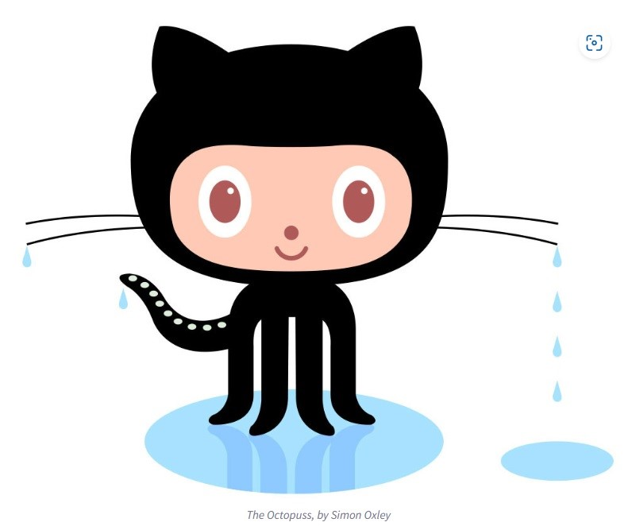

All about GitHub
- Q.What is a version control system?
A.The practice of tracking and managing changes to software code.
Version control systems are software tools that help software teams
manage changes to source code over time.
- Q.What is git
A.Git is a free and open source distributed version control system designed to handle everything from small to
very large projects with speed and efficiency.
- Q.What is GitHub?
A.GitHub, Inc. is an Internet hosting service for software development and version control using Git.
It provides the distributed version control of Git plus access control, bug tracking, software feature
requests, task management, continuous integration, and wikis for every project.
- Q.What is the difference between git and GitHub?
A.Git is a version control system that lets you manage and keep track of your source code history. GitHub
is a cloud-based hosting service that lets you manage Git repositories.
- Q.Who started GitHub and how was it started?
A.It was started by Tom Preston-Werner, Chris Warnstrath, P.J. Hyett, and Scott Chacon.
"GitHub achieved incredible growth and success by identifying a major problem that millions of people
all over the world were wrestling with—how to collaborate on code—and devising an elegant solution that
the market desperately needed. By building a SaaS service around Git, an open-source project, GitHub
was able to deliver value to and monetize that open-source ecosystem. This is also what made GitHub such
an attractive acquisition for Microsoft in early June 2018, despite Microsoft’s troubled history in the
open-source community."
- Q.What company owns it now?
A.Microsoft
- Q.How much does a GitHub account cost?
A.A basic account is free, $48 per user for advanced collaboration, and $231 per user for an Enterprise account.
- Q.What is the octocat?
A.the mascot of GitHub
Git/GitHub terms:
- Repository - Contains all of your project's files and each file's revision history
- Commit - An individual change to a file (or set of files)
- fork - a new repository that shares code and visibility settings with the original “upstream” repository.
- push - Pushing is how you transfer commits from your local repository to a remote repo.
- pull requests - Pull requests let you tell others about changes you've pushed to a branch in a repository on GitHub.
- workflows - A workflow is a configurable automated process that will run one or more jobs.
- issues - Issues let you track your work on GitHub, where development happens.
- raw button - opens the file in a raw form, meaning that any HTML formatting disappears.
- blame button - is used to examine the contents of a file line by line and see when each line was last modified and
who the author of the modifications was.